Gaussian Processes #
This notebook presents Gaussian Processes, a fitting method that has countless applications in Statistics and ML.
Notably, it has 2 properties we may exploit:
it can be used to fit a black-box function
it naturally provides uncertainties on the model
Applications:
Gaussian Processes is very powerful on its own, being a generic fitting method for any regression task.
However ..
It shines when incorporated in Bayesian Optimization, a technique used for e.g. hyperparameter optimization .
Setup#
#!pip install scikit-learn astropy scikit-image --quiet
import requests
url = "https://raw.githubusercontent.com/AstroStat-Academy/assets-public/main/colab/clone_and_cd_colab.py"
colab = requests.get(url).text
exec(colab)
Running locally, skipping Colab setup.
import requests
url = "https://raw.githubusercontent.com/AstroStat-Academy/assets-public/main/styles/plot_style.py"
style = requests.get(url).text
exec(style)
Imported matplotlib.
Imported seaborn.
Plotting style set.
import numpy as np
import pandas as pd
Preamble: \(n\) function points are equal to 1 point in \(\mathbb{R}^{n}\)#
Let’s assume we have an unknown function \(-\) the one we want to model \(-\) \(f(x)\), where \(x\) is 1D.
IMPORTANT: We do not know the functional form of \(f\) !
We only know that, for every point \(x_i\), we can generate a corresponding \(y_i \equiv f(x_i)\)
# Unknown function of extra-terrestrial origin:
def f(x):
return np.exp(-0.5 * x) * np.cos(2 * x)
'''NOTE: You have to pretend we do _not_ know the mathematical form.
Just use this `f(x)` as a black-box function.'''
xx = np.linspace(0, 5, 50)
X = np.array([0.7, 1.1, 1.7, 1.9, 2.8, 3.5, 3.9, 4.3])
plt.figure()
plt.axhline(y=0, lw=0.5, c='grey')
plt.plot(xx, f(xx), c='C0', lw=0.5, label="We don't know this ..")
plt.scatter(X, f(X), c='C0', s=65, lw=0.5, label=".. but we can have these")
plt.xlabel('x')
plt.ylabel('f(x)')
for i in range(2):
plt.plot([X[i], X[i]], [0, f(X[i])], ls='--', c='grey', lw=1) # Vertical segment to curve
plt.plot([0, X[i]], [f(X[i]), f(X[i])], ls='--', c='grey', lw=1) # Horizontal segment to y-axis
plt.text(0, f(X[i])+0.1, str("$f(x_%s)$" % (i+1)), c='C0', fontsize=12, verticalalignment='center')
plt.legend()
plt.show()
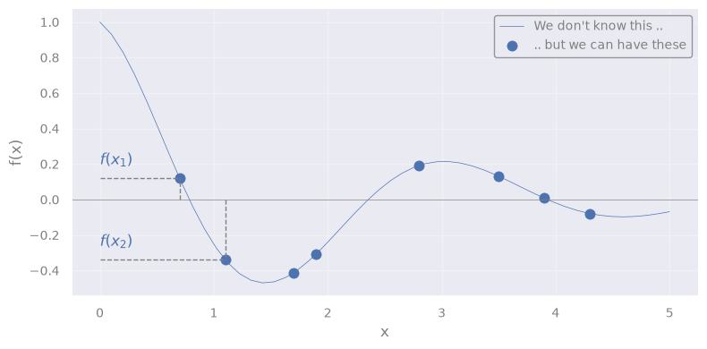
We can see the array composed of the \(n\) values:
as 1 point in \(\mathbb{R}^{n}\) (but we can show only the first 2 dimensions)
# Define grid
fx1x1 = np.linspace(-0.0, 0.5, 50)
fx2x2 = np.linspace(-0.5, 0.0, 50)
fX1, fX2 = f(X[0]), f(X[1])
from mpl_toolkits.mplot3d import Axes3D
def plot_point_in_Rn(fX1, fX2, fx1x1, fx2x2, rv=None):
fig = plt.figure(figsize=(8, 6))
ax = fig.add_subplot(111, projection='3d')
# Plot the point of interest
ax.scatter(fX1, fX2, 0, color='C3', s=50, label="[$f(x1)$, $f(x2)$]")
# Segmented lines to x- and y-axis
ax.plot([fX1, fX1], [np.min(fx1x1), fX2], [0, 0], ls='--', c='grey', lw=1) # Horizontal line to x-axis
ax.plot([np.min(fx1x1), fX1], [fX2, fX2], [0, 0], ls='--', c='grey', lw=1) # Horizontal line to y-axis
ax.text(fX1, np.min(fx1x1), 0, r"$f(x_1)$", fontsize=12, color='C0')
ax.text(np.min(fx1x1), fX2, 0, r"$f(x_2)$", fontsize=12, color='C0')
ax.set_xlabel('$f_1$')
ax.set_ylabel('$f_2$')
ax.set_xlim([np.max(fx1x1), np.min(fx1x1)]) # Flip for better visualization
ax.set_ylim([np.max(fx2x2), np.min(fx2x2)]) # Flip for better visualization
ax.set_zlim([0, 1]) # Set view above plane
if rv:
# Extract the 2D marginal mean and covariance
rv_2D = multivariate_normal(mean=mu[:2], cov=sigma[:2, :2])
# Compute probability density function on a grid
fX1X1, fX2X2 = np.meshgrid(fx1x1, fx2x2)
Z = rv_2D.pdf(np.dstack((fX1X1, fX2X2)))
# Plot the Multivariate Normal Distribution
ax.plot_wireframe(fX1X1, fX2X2, Z, color='C2', linewidth=0.5, label='Multinormal')
ax.set_zlim([0, np.max(Z)])
plt.legend()
plt.show()
plot_point_in_Rn(fX1, fX2, fx1x1, fx2x2, rv=None)
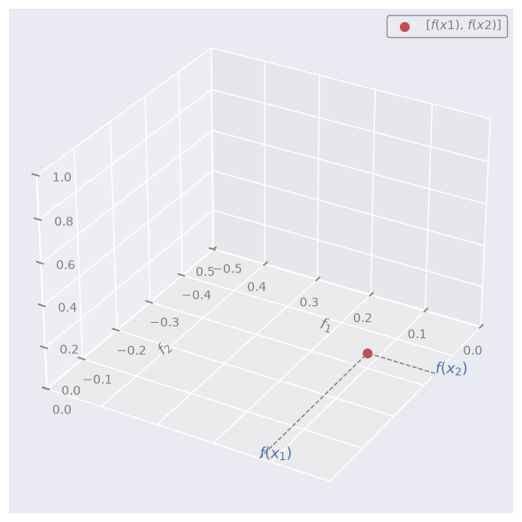
NOTE:
\(f_1\): space of all the possible values that the unknown function may have at point \(x_1\)
\(f_2\): space of all the possible values that the unknown function may have at point \(x_2\)
\(f(x_1)\): actual value that the unknown function has at point \(x_1\)
\(f(x_2)\): actual value that the unknown function has at point \(x_2\)
Let’s now assume that f = \([f(x_1), f(x_2),\dots, f(x_n)]\) is a point that follows a multivariate Gaussian (Normal) distribution in \(\mathbb{R}^{n}\).
In other words, we assume that f is sampled from a multivariate Normal
Let’s throw an arbitrary multivariate Normal in the image:
from scipy.stats import multivariate_normal
rng = np.random.default_rng(seed=42)
n_dim = len(X)
# the number of dimensions equals the number of datapoints
# Define Multivariate Normal Distribution
mu = f(X) + rng.uniform(0.05, 0.1, size=n_dim) # Random means vector (conveniently near the true values)
cov = 0.05*rng.random((n_dim, n_dim)) # Random covariance
sigma = np.dot(cov, cov.T) # Ensure it's positive semi-definite
#
rv = multivariate_normal(mean=mu, cov=sigma)
plot_point_in_Rn(fX1, fX2, fx1x1, fx2x2, rv=rv)
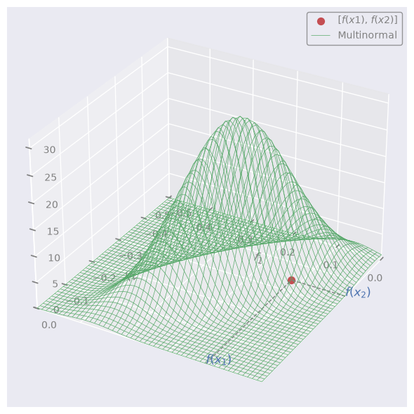
We can pretend that the red dot (f) is sampled at random from this distribution.
NOTE:
A set of variables is multivariate (= jointly) Normal \(\leftrightarrow\) every linear combination of them is normally distributed
\(\rightarrow\) the projections (“marginalizations”) of the multivariate are also Normal (in 1D):
def plot_marginals(fx1x1, fx2x2, rv, mu, f=None, X=None):
# Extract the 2D marginal mean and covariance
rv_2D = multivariate_normal(mean=mu[:2], cov=sigma[:2, :2])
# Compute probability density function on a grid
fX1X1, fX2X2 = np.meshgrid(fx1x1, fx2x2)
Z = rv_2D.pdf(np.dstack((fX1X1, fX2X2)))
# Generate marginal distributions
marginal_f1 = multivariate_normal(mu[0], sigma[0][0])
marginal_f2 = multivariate_normal(mu[1], sigma[1][1])
marg_f1_vals = marginal_f1.pdf(fx1x1)
marg_f2_vals = marginal_f2.pdf(fx2x2)
# Create figure;
if not f:
n_rows = 2
n_cols = 2
figsize = (4, 4)
gridspec_kw={'height_ratios': [1, 3], 'width_ratios': [3, 1], 'hspace': 0, 'wspace': 0}
else:
n_rows = 2
n_cols = 4
figsize = (10, 4)
gridspec_kw={'height_ratios': [1, 3], 'width_ratios': [3, 1, 1, 6], 'hspace': 0, 'wspace': 0}
fig, axes = plt.subplots(n_rows, n_cols, figsize=figsize, gridspec_kw=gridspec_kw)
axes[0, 1].axis('off')
ax_marg_x = axes[0, 0]
ax_joint = axes[1, 0]
ax_marg_y = axes[1, 1]
if f:
axes[0, 2].axis('off')
axes[0, 3].axis('off')
axes[1, 2].axis('off')
ax_f = fig.add_subplot(axes[1, 3])
# Contour plot in central panel
contour = ax_joint.contour(fX1X1, fX2X2, Z, levels=10, cmap='Greens', zorder=-1)
# Plot the point of interest
ax_joint.scatter(fX1, fX2, color='C3', s=50, label="[$f(x1)$, $f(x2)$]", zorder=1)
ax_joint.plot([fX1, fX1], [np.min(fx1x1), fX2], ls='--', c='grey', lw=1)
ax_joint.plot([np.min(fx2x2), fX1], [fX2, fX2], ls='--', c='grey', lw=1)
ax_joint.set_xlim([np.min(fx1x1), np.max(fx1x1)])
ax_joint.set_ylim([np.min(fx2x2), np.max(fx2x2)])
ax_joint.set_xlabel('$f_1$')
ax_joint.set_ylabel('$f_2$')
# Marginal distributions
ax_marg_x.plot(fx1x1, marg_f1_vals, color='C2')
ax_marg_x.set_xlim([np.min(fx1x1), np.max(fx1x1)])
ax_marg_x.set_xticklabels([])
ax_marg_x.set_yticklabels([])
ax_marg_y.plot(marg_f2_vals, fx2x2, color='C2')
ax_marg_y.set_ylim([np.min(fx2x2), np.max(fx2x2)])
ax_marg_y.set_xticklabels([])
ax_marg_y.set_yticklabels([])
if f:
xx = np.linspace(0, 5, 50)
ax_f.plot(xx, f(xx), c='C0', lw=0.5, label="We don't know this ..")
ax_f.axhline(y=0, lw=0.5, c='grey')
ax_f.scatter(X, f(X), c='C0', s=65, lw=0.5, label="Data")
ax_f.set_xlabel('x')
ax_f.set_ylabel('f(x)')
# Plot sampled points
fX_samples = rv.rvs(size=10, random_state=rng)
ax_joint.scatter(fX_samples[:, 0], fX_samples[:, 1], color='C1', s=30, zorder=1)
for fX_sample in fX_samples:
ax_f.scatter(X, fX_sample, c='C4', s=30, lw=0.5, label="Data", alpha=0.5)
plt.show()
plot_marginals(fx1x1, fx2x2, rv, mu, f=None, X=None)
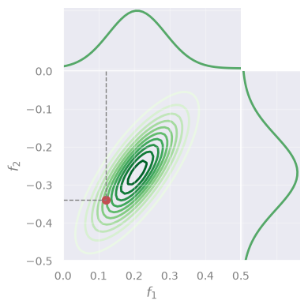
Gaussian Processes#
A Gaussian Process (GP) is a distribution over functions.
We assign probabilities to entire functions \(\rightarrow\) any function sampled from a GP is a possible “realization” of a stochastic process.
Definition#
A function f(x) is distributed according to a GP if:
for any set of input points \([x_1, \dots, x_n]\), the corresponding set of function values [ f(x\(_1\)), …, f(x\(_n\)) ] follows a multivariate Gaussian (Normal) distribution.
\(\rightarrow\) Yes, just like we visualized above!
Simliarly, we can sample other points from the same distribution, and plot them:
plot_marginals(fx1x1, fx2x2, rv, mu, f=f, X=X)
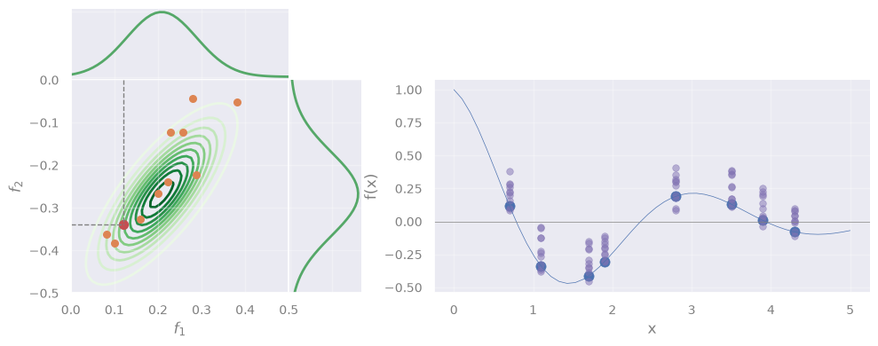
However, we see that the sampled points do not follow the data.
\(\rightarrow\) Solving GP means to find the correct Gaussian that describes the data.
If we do, we can predict the function at any \(x_*\)!
Intuition#
But … how can we find the whole Gaussian by using only 1 datapoint (the red one)?
Key idea: Function values at different points are not \(i.i.d.\) but instead exhibit covariance.
\(\rightarrow\) When sampling from a GP, we effectively draw an entire set of function values [\(f(x_1), \dots, f(x_n)\)], not just independent values at each point \(x\).
In mathematical terms#
If a function is sampled from a GP, we write:
where:
\(m(x)\) is the mean function \(-\) gives the expected value of \(f(x)\) at any \(x\)
\(k(x, x')\) is the “covariance” (or “kernel”) \(-\) tells how much the function values at \(x\) and \(x'\) are expected to vary together
Equivalently \(-\) we say that f = \([f(x_1), f(x_2),\dots, f(x_n)]\) is sampled from a multivariate Normal \(\mathcal{N}\):
with mean \(m(x)\) and covariance \(k(x, x')\).
Or, in a more compact form:
This will be our model.
Problem Statement#
Objective: Find the model’s best m and K that allow to approximate the unknown function \(f(x)\).
Our observables are a set of inputs:
and corresponding outputs:
Assumption 1: The observed \(y_i\) are not error-less \(-\) instead, they are noisy realizations of \(f(x)\):
“f” \(\rightarrow\) true function values (unknown)
“y” \(\rightarrow\) observed function values
Assumption 2: \(\epsilon_i\) are independent Gaussian noise terms with variance \(\sigma^2_n\)
(Yes, a lot of different Gaussians are involved!)
Solving GP#
Inference of test points
Now, suppose we wish to predict \(f_*\) = \(f(x_*)\) at new test point \(x_*\) \(\rightarrow\) we have to extend f to a new array:
Since \(-\) by definition \(-\) any finite collection of function values in a GP follows a multivariate Normal:
where:
\(m_*\) is the mean vector evaluated at \(x_*\),
\(K\) is the \(n \times n\) covariance matrix on \(X\),
\(k_* = [k(x_∗,x_1), \dots, k(x_∗,x_n)]^T\) is the covariance vector between the test point and the training points,
\(k_{∗∗} = k(x_∗,x_∗)\) is the variance at the test point.
Of course, we don’t have the array f, but y (our observations) \(\rightarrow\) we actually modify Eq. 2 to include y:
Deriving the posterior
Our goal is to obtain the “posterior distribution”, i.e., \(p(f_* | y)\) \(\rightarrow\) If we have that, we can infer \(f_*\) for any new \(x_*\).
Let’s derive it \(-\) Starting form Eq. 1:
Since \(\mathbf{f} \sim \mathcal{N} \left(\mathbf{m}, K\right)\) and the noise \(\epsilon_i\) is Gaussian, the observed data \(y\) is also Gaussian:
with variance equalling the sum of variances of f and \(\epsilon_i\).
Plugging this into Eq. 2, we get:
For a joint Normal like the one in Eq. 5, there is a rule to derive the conditional probability …
[Detailed derivation] (click here to expand)
We identify, in our case:
… which gives:
\(\rightarrow\) To predict \(f_*\) at point \(x_*\), we will sample from this Multinormal! \(\blacksquare\)
Q: BTW, what does it even mean to “condition” a multivariate Normal? (in-class discussion)
[Spoiler] (click here to expand)
Sorry, you should have attended in class, for this!
Interpretation#
is our best estimate for the function values at the test inputs \(x_*\)
quantifies our uncertainty about these estimates
The kernel
What was \(k(x, x')\), again?
“tells how much the function values at \(x\) and \(x'\) are expected to vary together” = covariance between \(f(x)\) and \(f(x')\)
In practice, we don’t know \(\rightarrow\) we assume a function, e.g., the Radial Basis Function (RBF) kernel:
Completing the derivation#
Yes,
Eq. 6
But,
we forgot a detail
\(\rightarrow\) We need to derive \(\ell\) (or any other kernel hyperparameter) !
\(\rightarrow\) We need to derive \(\sigma_n\) (Eq. 4)!
The hyperparameter \(\sigma_n\) represents the expected noise around the true values of f
How?
We must find the best \(\hat{\sigma_n}\) and \(\hat{\ell}\) maximize the likelihood that our model returns the observed data:
a.k.a. Maximum Likelihood Estimation (MLE)
To be specific, in our case:
\(\rightarrow\) We just need \(p\bigl(\mathbf{y} \mid \mathbf{X}, \sigma_n, \ell\bigr)\)
… But, we have it: Eq. 4 !
In other words:
NOTE: The dependence on X is included in K, which is a matrix with entries \(k(x_i, x_j)\).
… which \(-\) in matrix notation \(-\) is:
Replacing this in Eq. 7:
Q: Which technique we can use to find the max? (in-class discussion)
[Spoiler] (click here to expand)
\(\rightarrow\) Any standard optimization algorithm, e.g., Gradient Descent!
I’m gonna sleep, show me the code already#
After all this theory, the sklearn code will look underwhelming, for its simplicity ..
from sklearn.gaussian_process import GaussianProcessRegressor
from sklearn.gaussian_process.kernels import RBF, WhiteKernel
rng = np.random.default_rng(seed=1)
def f_noisy(X):
return f(X.flatten()) + 0.1 * rng.normal(size=X.shape[0])
# Data
X_train = np.array([0.7, 1.1, 1.7, 1.9, 2.8, 3.5, 3.9, 4.3]).reshape(-1, 1)
'''same `X` as above, but reshaped to 2D for sklearn'''
y_train = f_noisy(X)
'''creating y from the "unknown" f (*wink *wink) plus a little noise'''
# Define a kernel:
# - RBF is the radial basis function kernel
# - WhiteKernel handles noise in the data
guess_l = 1.0
guess_sigma_n = 0.3
kernel = RBF(length_scale=guess_l) + WhiteKernel(noise_level=guess_sigma_n)
'''
Here we initialize the kernels with the initial guesses for their hyperparameters.
Internally, sklearn's `GaussianProcessRegressor` will optimize them.
Initial guesses are important! A fit may fail if the guesses are too far off.
'''
# Initialize the Gaussian Process Regressor
gpr = GaussianProcessRegressor(kernel=kernel, random_state=42)
# Fit the model
gpr.fit(X_train, y_train)
GaussianProcessRegressor(kernel=RBF(length_scale=1) + WhiteKernel(noise_level=0.3),
random_state=42)In a Jupyter environment, please rerun this cell to show the HTML representation or trust the notebook. On GitHub, the HTML representation is unable to render, please try loading this page with nbviewer.org.
Parameters
Fitted attributes
Now that the model is fit, we can print the best hyperparamers:
# Print the chosen kernel parameters after fitting
print("Optimized Kernel:", gpr.kernel_)
Optimized Kernel: RBF(length_scale=1.09) + WhiteKernel(noise_level=0.00492)
And, of course, predict:
yhat = gpr.predict(X_train)
xx = np.linspace(0, 5, 50)
plt.figure()
plt.axhline(y=0, lw=0.5, c='grey')
plt.plot(xx, f(xx), c='C0', lw=0.5, label="Unknown $f(x)$")
plt.scatter(X_train.flatten(), y_train, c='C0', s=65, lw=0.5, label=r"$y$ (noisy)")
plt.scatter(X_train.flatten(), yhat, c='C3', s=65, lw=0.5, label=r"$\hat{y}$")
'''NOTE: We need to flatten `X_train` for the plot, since it is 2D'''
plt.xlabel('x')
plt.ylabel('f(x)')
plt.legend()
plt.show()
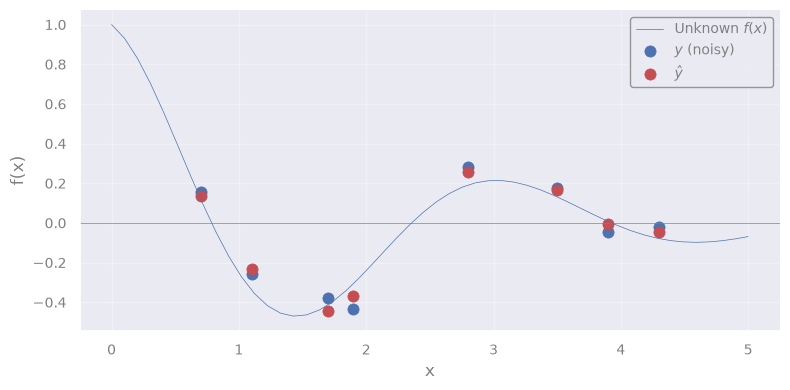
You know what? Let’s predict for a new test point \(x_*\) !
No, better, for 50 test points in the interval 0 < \(x_*\) < 5:
X_test = np.linspace(0, 5, 50).reshape(-1, 1)
# Predict on new data
X_test = np.linspace(0, 5, 50).reshape(-1, 1)
yhat_test = gpr.predict(X_test)
plt.figure()
plt.axhline(y=0, lw=0.5, c='grey')
plt.plot(xx, f(xx), c='C0', lw=0.5, label="Unknown $f(x)$")
plt.scatter(X_train.flatten(), y_train, c='C0', s=65, lw=0.5, label="$y$ (noisy)")
plt.scatter(X_test.flatten(), yhat_test, c='C3', s=30, lw=0.5, label=r"$\hat{y}_{test}$")
plt.plot(X_test.flatten(), yhat_test, c='C3', lw=1)
'''NOTE: We need to flatten `X` and `X_test` for the plot, since they are 2D'''
plt.xlabel('x')
plt.ylabel('f(x)')
plt.legend()
plt.show()
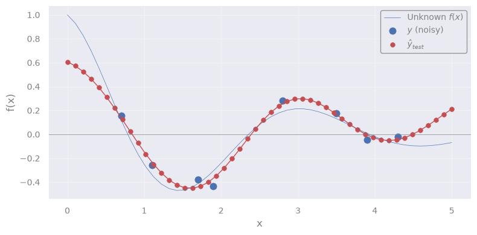
Q: What we are seeing here?
It is the mean function \(m(x)\) \(\leftrightarrow\) the most probable function that describes the true \(f(x)\)
Remember the interpretation ?
is our best estimate for the function values at the test inputs \(x_*\)
If there is a “mean”, there must be uncertainty around it:
quantifies our uncertainty about these estimates
We can extract it like this (full covariance matrix):
yhat_test, yhat_test_cov = gpr.predict(X_test, return_cov=True)
or like this (only diagonal terms, i.e. standard deviations at each \(x_*\)):
yhat_test, yhat_test_std = gpr.predict(X_test, return_std=True)
yhat_test, yhat_test_std = gpr.predict(X_test, return_std=True)
plt.figure()
plt.axhline(y=0, lw=0.5, c='grey')
plt.plot(xx, f(xx), c='C0', lw=0.5, label="Unknown $f(x)$")
plt.scatter(X_train.flatten(), y_train, c='C0', s=65, lw=0.5, label="$y$ (noisy)")
plt.plot(X_test.flatten(), yhat_test, c='C3', lw=1, label=r"$\hat{y}_{test}$ (mean function)")
'''NOTE: We need to flatten `X` and `X_test` for the plot, since they are 2D'''
plt.fill_between(
X_test.ravel(),
yhat_test - yhat_test_std,
yhat_test + yhat_test_std,
alpha=0.2,
color='tomato',
label=r'1-$\sigma$ confidence interval'
)
plt.xlabel('x')
plt.ylabel('f(x)')
plt.legend()
plt.show()
The history saving thread hit an unexpected error (OperationalError('attempt to write a readonly database')).History will not be written to the database.
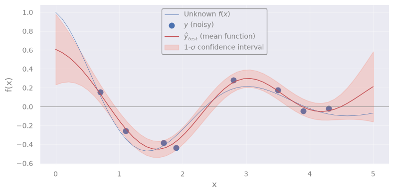
Exercise [45 min]
Objective: Fill-in missing pixels in an image.
Dataset: An astronomical image.
from astropy.io import fits
from astropy.visualization import ZScaleInterval
import requests
from io import BytesIO
from skimage.transform import rescale
# Download NGC 1300 galaxy image from HST archive (FITS format)
fits_url = "https://hla.stsci.edu/cgi-bin/fitscut.cgi?red=hst_08597_11_wfpc2_f606w_pc&size=ALL&format=fits&config=ops"
response = requests.get(fits_url)
fits_file = BytesIO(response.content)
# Load the FITS image
data_fits = fits.getdata(fits_file)
# Crop image around galaxy
data_crop = data_fits[350:650, 425:725]
# Downscale the image (for faster computations)
scale_factor = 5
data = rescale(data_crop, 1/scale_factor, anti_aliasing=True, preserve_range=True).astype(data_crop.dtype)
# > Figure
fig, axes = plt.subplots(nrows=1, ncols=1)
axes = [axes]
# Apply ZScale interval for color scaling
interval = ZScaleInterval()
vmin, vmax = interval.get_limits(data)
axes[0].set_title("Original image", fontsize=12)
axes[0].imshow(data, cmap='magma', origin='lower', vmin=vmin, vmax=vmax)
plt.tight_layout()
plt.show()
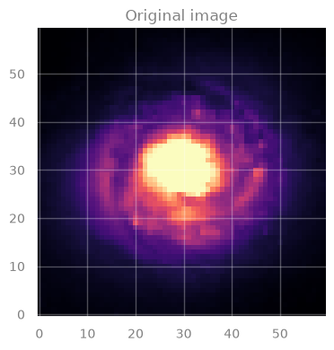
IMPORTANT:
In this image, each pixel has an associated value \(\rightarrow\) indicated by the color.
This is our original data, the image for galaxy NGC 1300.
But, we will “corrupt” it by creating holes in it.
# Generate `n_holes` random circular gaps and set their values to np.nan
rng = np.random.default_rng(seed=2)
masked_data = data.copy()
n_holes = 20
rows, cols = data.shape
for _ in range(n_holes):
x, y = rng.integers(0, cols), rng.integers(0, rows)
radius = rng.integers(2, 5) # we add holes of 2 to 5 pixels at random
y_grid, x_grid = np.ogrid[:rows, :cols]
mask = (x_grid - x) ** 2 + (y_grid - y) ** 2 < radius ** 2
masked_data[mask] = np.nan
'''NOTE:
If we create too many holes (`n_holes`) or too large holes (`radius`),
we may not have enough data to properly fit the data.
You may experiment with these quantities and see the effect on the
final result.
'''
# > Figure
fig, axes = plt.subplots(nrows=1, ncols=1)
axes = [axes]
# Apply ZScale interval for color scaling
interval = ZScaleInterval()
vmin, vmax = interval.get_limits(data)
axes[0].set_title("Image with missing values", fontsize=12)
axes[0].imshow(masked_data, cmap='magma', origin='lower', vmin=vmin, vmax=vmax)
plt.tight_layout()
plt.show()
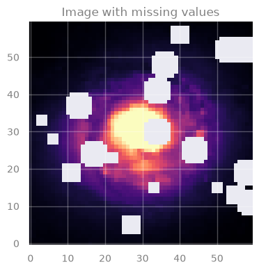
Task: Use GP to create a model that can predict the missing values.
In particular, you must:
Train the GP model
Predict on missing data
Use your predictions to color the missing spots in the image!
Hint:
For step 3, when you need to create an image with your predictions, you literally have to invert the creation of y_test (see next block)
Q: How can we prepare the data for GP? (in-class discussion)
[Spoiler] (click here to expand)
We can place the pixel coordinates in the matrix \(\rightarrow\) X
.. and the corresponding values (color, in the image) in the array \(\rightarrow\) y
from pandas import option_context
# Put the coordinates of valid and invalid pixels in X ...
X_train = np.column_stack(np.where(~np.isnan(masked_data))) # Coordinates of pixels that are NOT NaN
X_test = np.column_stack(np.where(np.isnan(masked_data))) # Coordinates of pixels that are NaN
# Put the values of valid and invalid pixels in y ...
y_train = data[np.where(~np.isnan(masked_data))]
y_test = data[np.where(np.isnan(masked_data))]
with option_context("display.max_rows", 4):
print('Train data:')
display(pd.DataFrame(np.column_stack((X_train, y_train)), columns=['X1', 'X2', 'y']))
print('Test data:')
display(pd.DataFrame(np.column_stack((X_test, y_test)), columns=['X1', 'X2', 'y']))
Train data:
| X1 | X2 | y | |
|---|---|---|---|
| 0 | 0.0 | 0.0 | 0.066435 |
| 1 | 0.0 | 1.0 | 0.068779 |
| ... | ... | ... | ... |
| 3063 | 59.0 | 58.0 | 0.049804 |
| 3064 | 59.0 | 59.0 | 0.050841 |
3065 rows × 3 columns
Test data:
| X1 | X2 | y | |
|---|---|---|---|
| 0 | 3.0 | 25.0 | 0.146869 |
| 1 | 3.0 | 26.0 | 0.146841 |
| ... | ... | ... | ... |
| 533 | 58.0 | 41.0 | 0.104825 |
| 534 | 58.0 | 42.0 | 0.100024 |
535 rows × 3 columns
# Student: Write your code here. Add blocks as you deem fit.
[Solution below]
%%time
# 1. Train the GP
from sklearn.gaussian_process import GaussianProcessRegressor
from sklearn.gaussian_process.kernels import RBF, WhiteKernel
rng = np.random.default_rng(seed=1)
# Define a kernel:
# - RBF is the radial basis function kernel
# - WhiteKernel handles noise in the data
guess_l = 1.0
guess_sigma_n = 0.3
kernel = RBF(length_scale=guess_l) + WhiteKernel(noise_level=guess_sigma_n)
# Initialize the Gaussian Process Regressor
gpr = GaussianProcessRegressor(kernel=kernel, random_state=42)
# Fit the model
gpr.fit(X_train, y_train)
# Print the chosen kernel parameters after fitting
print("Optimized Kernel:", gpr.kernel_)
Optimized Kernel: RBF(length_scale=1.96) + WhiteKernel(noise_level=0.0118)
CPU times: user 3min 18s, sys: 1.99 s, total: 3min 20s
Wall time: 14.5 s
# 2. Predict
yhat_test = gpr.predict(X_test, return_std=False)
print('yhat_test shape: %s' % yhat_test.shape)
yhat_test shape: 535
# 3. Color the plot
# Create a new image
filled_data = masked_data.copy()
# Fill the masked points with predictions
filled_data[np.where(np.isnan(masked_data))] = yhat_test
# > Figure
fig, axes = plt.subplots(figsize=(10, 4), nrows=1, ncols=3)
# Apply ZScale interval for color scaling
interval = ZScaleInterval()
vmin, vmax = interval.get_limits(data)
axes[0].set_title("Image with missing values", fontsize=12)
axes[0].imshow(masked_data, cmap='magma', origin='lower', vmin=vmin, vmax=vmax)
axes[1].set_title("Image with filled gaps", fontsize=12)
axes[1].imshow(filled_data, cmap='magma', origin='lower', vmin=vmin, vmax=vmax)
axes[2].set_title("Original image", fontsize=12)
axes[2].imshow(data, cmap='magma', origin='lower', vmin=vmin, vmax=vmax)
plt.tight_layout()
plt.show()
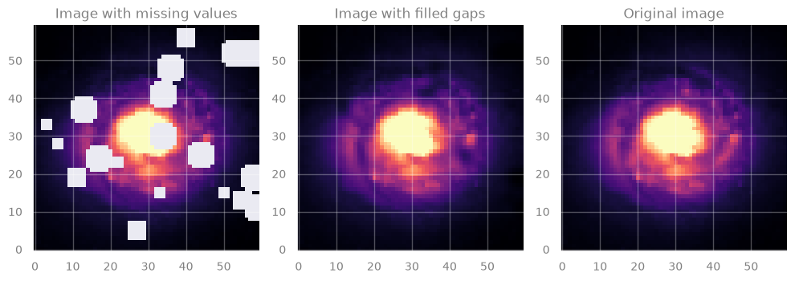
[End of solution]
Noticed anything? GP is quite sloooow …
Complexity:
Training: \(\mathcal{O}(n^3)\) \(-\) due to inversion of the covariance matrix
Prediction: \(\mathcal{O}(n^2)\) \(-\) for computing the mean and variance
Food-for-thought#
Interpretation
Why GP works “reasonably well” here?
GP uses a kernel \(k(x_i, x_j)\) which represents the correlation between \(f(x_i)\) and \(f(x_j)\)
Q: What is \(f(x_i)\) and \(f(x_j)\), in the case of our image?
[Spoiler] (click here to expand)
The pixel values (colors) !
So the question becomes: are the pixel values at \(x_i\) and \(x_j\) correlated at all?
\(\rightarrow\) Yes! Because the galaxy light profile changes smoothly!
Uncertainties
What is the uncertainty on the prediction?
We filled the image with the mean predicted value.
But GP also provides standard deviation.
\(\rightarrow\) How could we display that ?
###EOF